Salinas Maragogi Resort
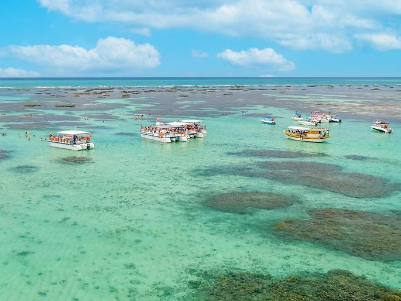
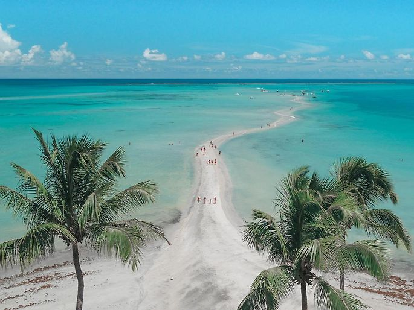
♦ Descrição ♦
Salinas do Maragogi Resort é um resort 5 estrelas com conveniências como sala de vapor, centro de bem estar e solário em Maragogi. Mirante alto do cruzeiro fica a 2.1 km do hotel, enquanto a Praia Do Camacho fica a 1.5 km de distância.
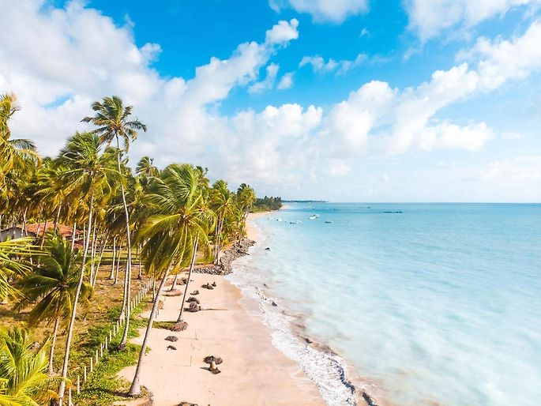♦ Localização ♦
Maragogi se localiza no estado de Alagoas. A partir desse resort é possível chegar ao centro de maragogi em 20 minutos andando.O aeroporto mais próximo é o aeroporto internacional de Maceió, a 130 km de Salinas. do Maragogi Resort.
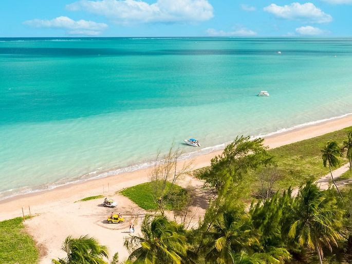
♦ Acomodação♦
Os quartos descontraídos têm Wi-Fi, TV com tela plana, cofre, frigobar e sacada. Alguns oferecem vista para o rio. As suítes incluem área de estar separada e vista para o mar. Serviço de quarto disponível.
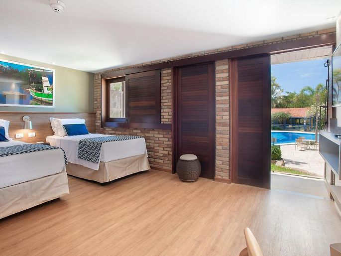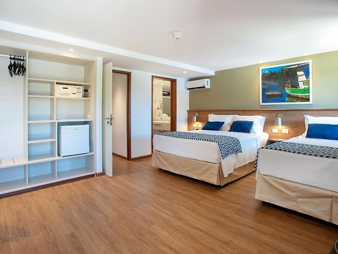
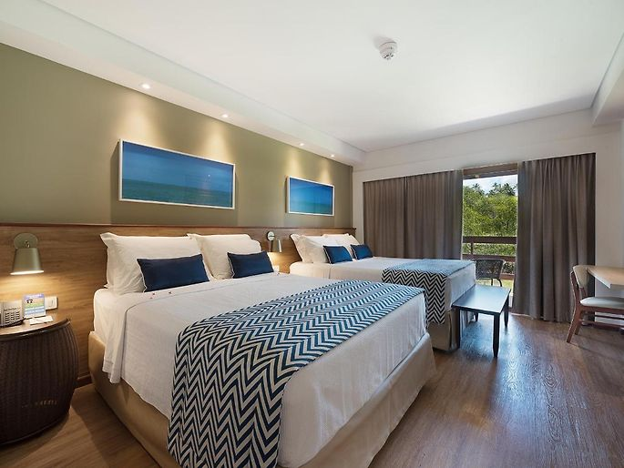
♦ Alimentação ♦
Você pode usufruir de um dos 3 restaurantes, que servem pratos regionais e internacionais, bem como de um dos 3 bares, que oferecem lanches e bebidas. As refeições, lanches, bebidas alcoólicas e não alcoólicas estão incluídas na diária do quarto e disponíveis 24 horas por dia sem limite de consumo. As refeições e bebidas estão sob um controle de segurança alimentar e disponíveis para os hóspedes consumirem à vontade.
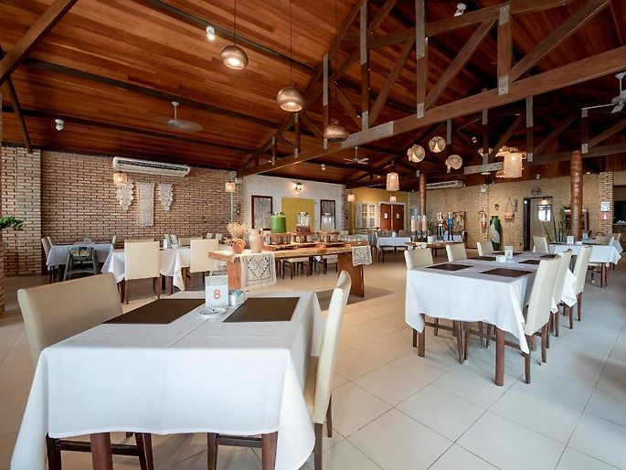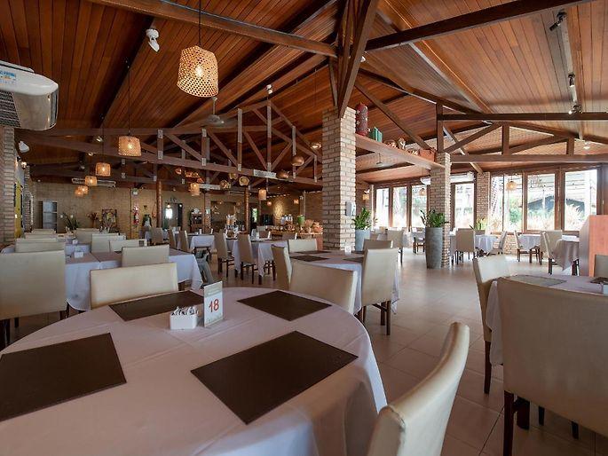
♦ Lazer ♦
Você pode contar com uma equipe de entretenimento e com um estacionamento privativo de cortesia. Um parquinho infantil, esportes aquáticos, vôlei e experiências de aventura são oferecidos no local. As atividades ofercidas são: eventos esportivos ao vivo(transmissão), música/apresentação ao vivo, jantares temáticos, comédia stand-up, equipamento de tênis, entretenimento à noite, espaço kids, minigolfe, mergulho, mergulho com snorkel, canoagem, bilhar, salão de jogos. A equipe da recepção está à sua disposição 24 horas por dia.
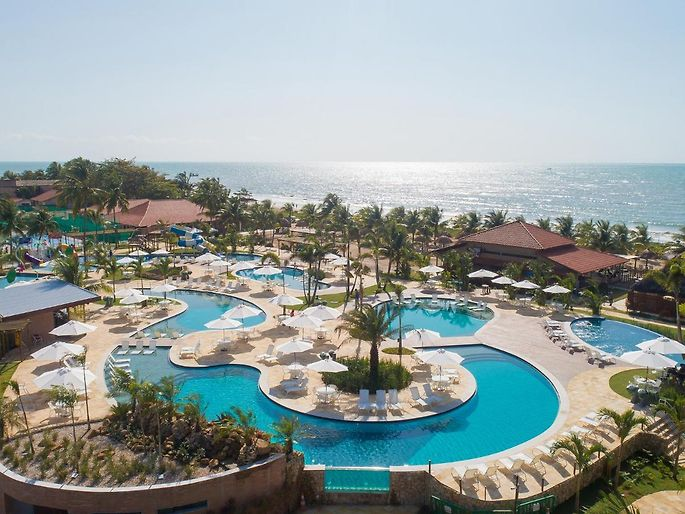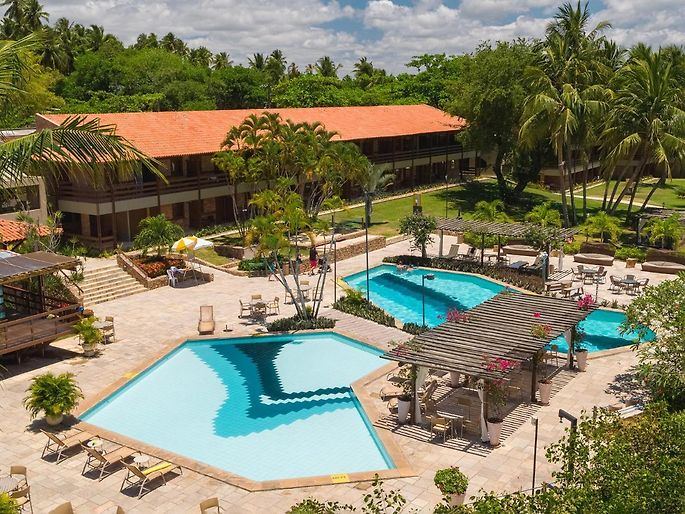
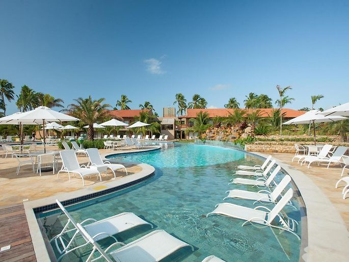
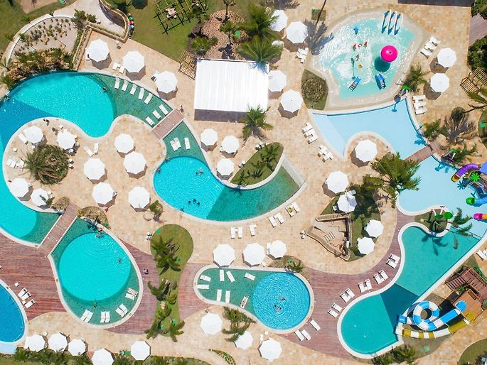
♦ Reservas ♦
Entradas das 15h às 21h30.
Saída até 12h.
Cancelamento/pré-pagamento: As políticas de cancelamento e pré-pagamento variam de acordo com o tipo de acomodação.
Políticas para crianças: Crianças de qualquer idade são bem-vindas. Crianças com 13 anos ou mais são consideradas adultos nesta acomodação. Para ver os preços e as informações de ocupação certos, informe quantas crianças fazem parte do seu grupo e a idade delas.
Não há exigência de idade para o check-in.
Animais não são permitidos.